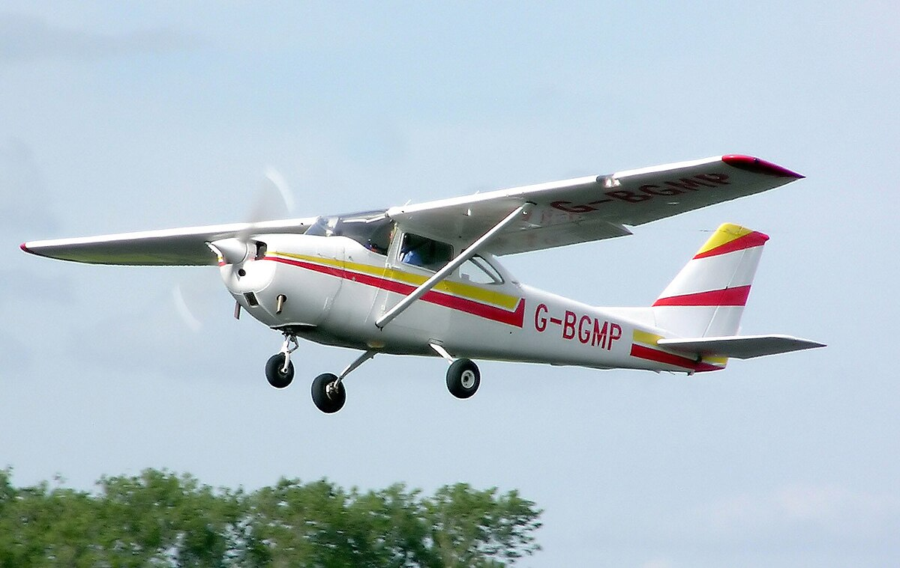

| Un avión ligero (en las categorías más ligeras también avioneta) es un avión de tamaño relativamente pequeño. Si bien algunas entidades reguladoras aeronáuticas definen «avión ligero» como aeronaves de cierto rango de pesos, no existe una definición universal. Muchas de las aeronaves utilizadas para el transporte de mercancías, fotografía aérea, vuelos de fumigación, ambulancias aéreas y vuelos comerciales de corta duración (taxi aéreo, entre otros) se consideran aviones ligeros. Normalmente, este tipo de aviones no necesitan una pista demasiado larga para aterrizar o despegar. Los pilotos de este tipo de aviones tienen una licencia de piloto privado (aviación general), siendo precisamente modelos de aviones ligeros los usados en para las clases de vuelo en las distintas escuelas. Los aviones ultraligeros no están incluidos en esta categoría, siendo de categoría menor tanto en peso como en alcance y potencia, y con un número limitado de tripulantes. Estas requieren de una licencia de piloto distinta (en algunos países, como Estados Unidos, los monoplaza son considerados vehículos de recreo y no aeronaves, por lo que ni requieren una licencia). Algunas avionetas ultraligeras, algo más avanzadas y de fuselaje cerrado, guardan un aspecto muy similar a las avionetas ligeras, y a veces hasta un tamaño semejante. |  |
|
|